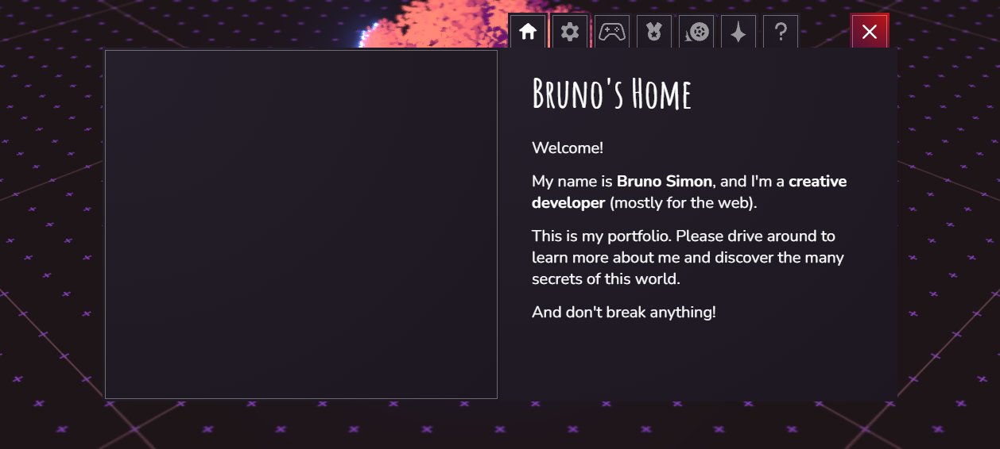

Craft Atlas · Client & UI State
State Management for portfolio-grade sites
Most beautiful sites need almost no state. The reference-grade ones treat state like a precious
resource: a scroll-spy flag, a persisted theme token, one WebGL scene enum — not a Redux galaxy.
This page maps when you actually need state, the four kinds you'll meet (local, global,
server, URL), and shows the React tools (Zustand / Jotai / Context) next to their Vue / Nuxt 4
equivalents (Pinia / useState / useAsyncData) — because our project is Nuxt 4.
- Default to none. Brittany Chiang ↗'s reference dev portfolio runs its entire active-section nav on one IntersectionObserver — no store at all.
- Local before global. A toggle that only one component reads is
useState/ref, full stop. - Server state is not client state. Cache it (
useAsyncData/ TanStack Query), don't dump it in a store. - URL is free global state. Filters, tabs, open-project — put them in the query string and they survive refresh + share.
- One store, sliced. When you do reach for global, it's a single tiny Zustand/Pinia store with selectors — not five context providers nested like an onion.
1 · Do you even need it?
Be honest about your site's shape. A portfolio is usually one of three archetypes, and each lives at a different point on the state spectrum:
Editorial / scroll site
Lee Robinson ↗, Brittany Chiang ↗, Arc ↗. Mostly static content. The only "state" is which section is in view and a theme preference. Zero global store needed — derive everything from scroll + the URL.
App-flavoured marketing
Linear ↗, Stripe ↗, Family ↗. Live interactive replicas, tabs, command menus. Here you have real local UI state (open tab, selected agent, dismissed banner) but it stays component-scoped.
Experiential / WebGL
Igloo Inc ↗, Bruno Simon ↗, Active Theory ↗. One global "scene state machine" (current district, loaded?, audio on?, achievements unlocked) drives the whole canvas. This is the one archetype that genuinely earns a store.
2 · The four kinds of state (name them, then they're easy)
Ninety percent of "state management is hard" disappears the moment you stop treating all state as one bucket. There are four, each with a different home:
| Kind | Lives where | Examples | React tool | Vue / Nuxt 4 tool |
|---|---|---|---|---|
| Local UI | The component | menu open, hover, input value, current tab | useState / useReducer | ref / reactive |
| Global UI | A shared store | theme, audio on/off, WebGL scene, cart | Zustand / Jotai / Context | Pinia / useState() composable |
| Server | A cache, not a store | projects list, GitHub stars, MDX posts | TanStack Query / RSC | useAsyncData / useFetch |
| URL | The address bar | filter, tab, page, open project, search | useSearchParams | useRoute / useRouter |
3 · Local first — most "state" never leaves the component
The cheapest, most maintainable state is the kind that never escapes one component.
Rauno Freiberg ↗'s signature copy-email button is the canonical example: a
button flips to a "Copied" label and back after a timeout — pure local state, no store,
no context. Stripe ↗'s Enterprise/Startups/Platforms tabs and accordions are
the same: an activeTab index that lives exactly where it's rendered.
React
function CopyEmail({ email }) {
const [copied, setCopied] = useState(false);
async function copy() {
await navigator.clipboard.writeText(email);
setCopied(true);
setTimeout(() => setCopied(false), 1500);
}
return (
<button onClick={copy} aria-live="polite">
{copied ? "Copied ✓" : email}
</button>
);
}Vue / Nuxt 4 — <script setup>
<script setup lang="ts">
const props = defineProps<{ email: string }>()
const copied = ref(false)
async function copy() {
await navigator.clipboard.writeText(props.email)
copied.value = true
setTimeout(() => (copied.value = false), 1500)
}
</script>
<template>
<button @click="copy" aria-live="polite">
{{ copied ? 'Copied ✓' : email }}
</button>
</template>currentSection in a store, it's read straight off the
DOM. The live demo below does exactly that; the active flag is a data-active attribute, not a variable in a store.
live · IntersectionObserver scroll-spy (no store)
4 · Global state — Zustand ↔ Pinia (when you finally need it)
Global state earns its keep when one value is read by many distant components and is client-only: a theme, an audio mute, a WebGL scene, a shopping cart. Active Theory ↗ keeps audio off by default behind a single toggle that the whole experience reads; Bruno Simon ↗'s site is essentially a state machine — current district, 38 achievements, a session timer, a mute flag, a "high effects / WebGPU" performance toggle — all global, because the canvas, the HUD, and the map marker all read the same source of truth.
For React, Zustand is the portfolio sweet spot: one tiny store, no provider, selector-based
subscriptions so a component only re-renders when its slice changes. The Nuxt 4 equivalent is
Pinia (or, for trivially small needs, Nuxt's built-in SSR-safe useState() composable).
React — Zustand
// stores/scene.ts
import { create } from "zustand";
type Scene = "intro" | "work" | "contact";
export const useScene = create<{
scene: Scene;
audio: boolean;
go: (s: Scene) => void;
toggleAudio: () => void;
}>((set) => ({
scene: "intro",
audio: false, // off by default
go: (scene) => set({ scene }),
toggleAudio: () => set((s) => ({ audio: !s.audio })),
}));
// component — subscribes to ONE slice only
const scene = useScene((s) => s.scene);Nuxt 4 — Pinia
// stores/scene.ts
import { defineStore } from "pinia";
export const useSceneStore = defineStore("scene", () => {
const scene = ref<"intro" | "work" | "contact">("intro");
const audio = ref(false); // off by default
const go = (s: typeof scene.value) => (scene.value = s);
const toggleAudio = () => (audio.value = !audio.value);
return { scene, audio, go, toggleAudio };
});
// component
const store = useSceneStore();
const { scene } = storeToRefs(store); // keep reactivityFor atomic, bottom-up state (one independent value per atom, no central store object), Jotai is the React option — great for many small unrelated flags. Reach for Context only for genuinely static, rarely-changing values (a theme object, a locale): Context has no selector mechanism, so every consumer re-renders on any change to the value — death by a thousand re-renders if you put fast-changing state in it.
useSceneStore,
useUiStore) instead.

5 · Server state is not client state
The biggest leverage move: stop copying network data into a global store. Projects, GitHub stars, MDX blog posts, a now-playing track — that's server state. It has caching, revalidation, loading and error phases that a plain store can't model. Linear ↗ and Josh Comeau ↗ both ship on Next.js App Router with React Server Components, so most data never touches the client store at all — it's fetched on the server and streamed in.
In Nuxt 4 the first-class tool is useAsyncData / useFetch: SSR-aware, deduplicated,
cached by key, and hydration-safe. It is the Pinia-free way to load data — and where you should put
99% of a portfolio's "data". Reserve TanStack Query / Pinia Colada for highly interactive client-side
refetch scenarios.
React — RSC + TanStack Query
// Server Component — no client state at all
export default async function Projects() {
const projects = await getProjects(); // runs on server
return <ProjectGrid projects={projects} />;
}
// Client island that needs refetch:
const { data, isPending, error } = useQuery({
queryKey: ["stars", repo],
queryFn: () => fetch(`/api/stars/${repo}`).then(r => r.json()),
staleTime: 60_000,
});Nuxt 4 — useAsyncData
<script setup lang="ts">
// SSR-rendered, cached by key, dedup'd, hydration-safe
const { data: projects, pending, error } = await useAsyncData(
"projects",
() => queryCollection("projects").all()
)
// $fetch shorthand for a simple endpoint:
const { data: stars } = await useFetch(`/api/stars/${repo}`, {
key: `stars-${repo}`,
server: false, // client-only if it's user-specific
})
</script>useAsyncData(key, …) and
useQuery({ queryKey }) dedupe by key. Two components asking for "projects" share
one request and one cache entry — that's your "global server state" for free, with no store to wire up.
6 · URL as state — the most underused store on the web
The query string is a free, shareable, refresh-proof, back-button-aware global store. Anything a user might want to bookmark or share belongs there: the active filter, the open tab, the selected project, a search term. Linear ↗'s numbered chapter IA (1.0–5.0 with 1.1/1.2 sub-tabs) is a natural URL-state candidate; Stripe ↗'s segment tabs (Enterprise / Startups / Platforms) are exactly the kind of thing that should round-trip through the address bar so a teammate can paste a link to the right view.
React — useSearchParams
"use client";
import { useSearchParams, useRouter } from "next/navigation";
const params = useSearchParams();
const router = useRouter();
const tab = params.get("tab") ?? "work";
function setTab(next) {
const p = new URLSearchParams(params);
p.set("tab", next);
router.push(`?${p.toString()}`, { scroll: false });
}Nuxt 4 — useRoute / useRouter
<script setup lang="ts">
const route = useRoute()
const router = useRouter()
const tab = computed(() => (route.query.tab as string) ?? "work")
function setTab(next: string) {
router.push({ query: { ...route.query, tab: next } })
}
</script>route.query with a
computed.
7 · Animation & scene state — keep it out of the render loop
This is where portfolios get it wrong. A 60fps scroll value or mouse position does not belong in React/Vue reactive state — pumping 60 updates/second through the reconciler tanks your frame budget. Igloo Inc ↗ drives its entire scroll-scrubbed igloo assembly through a GSAP timeline tied to scroll progress, and renders its UI inside WebGL — the reactive framework never sees the per-frame values. Henry Heffernan ↗'s live HUD clock and the camera dolly are imperative loops, not state updates.
The pattern: store discrete scene state reactively (which district, loaded?, audio on?), but keep continuous values (scroll progress, cursor, time) in refs / mutable objects that bypass reactivity. Active Theory ↗'s persistent GPU particle field reacts continuously yet exposes only a handful of discrete nav states (Work / Contact / category) to the shell.
React — discrete state, continuous in a ref
const scene = useScene((s) => s.scene); // discrete → reactive
const progress = useRef(0); // continuous → NOT state
useEffect(() => {
let raf;
const tick = () => {
progress.current = window.scrollY / maxScroll;
rig.update(progress.current); // imperative, no re-render
raf = requestAnimationFrame(tick);
};
raf = requestAnimationFrame(tick);
return () => cancelAnimationFrame(raf);
}, []);Nuxt / Vue — shallowRef + rAF
<script setup lang="ts">
const store = useSceneStore() // discrete → reactive
const progress = shallowRef(0) // bypass deep reactivity
useRafFn(() => { // @vueuse/core
progress.value = window.scrollY / maxScroll
rig.update(progress.value) // imperative, no patch
})
// reduced-motion is a first-class state input
const reduced = usePreferredReducedMotion()
</script>
prefers-reduced-motion is state too. Treat it as a first-class
input to your scene store, not an afterthought. When it's on, your state machine should resolve scenes
instantly instead of animating between them. Both Stripe ↗ and
Josh Comeau ↗ evaluate it at runtime and branch their motion accordingly.
8 · Persistence done right (theme = the canary)
Theme preference is the one piece of state nearly every portfolio persists — and the one most people botch with a flash-of-wrong-theme (FOUC). Josh Comeau ↗ literally wrote the canonical "Perfect Dark Mode" article; his implementation is flicker-free, persisted, and theme-token driven. The trick is to set the theme attribute before first paint via a tiny inline script, so the server-rendered HTML and the persisted choice never disagree. Henry Heffernan ↗'s OS even themes the in-world lamp and monitor from the same persisted toggle.
live · token-driven theme toggle (persists to localStorage)
// Nuxt 4: useColorMode() from @nuxtjs/color-mode kills FOUC for you —
// SSR-safe, persisted, with an inline head script injected automatically.
const colorMode = useColorMode()
colorMode.preference = "dark" // "system" | "light" | "dark"
// The store-free rule: a single attribute on <html> + CSS variables.
// No theme value duplicated across components — every component reads
// the cascade, so there is exactly one source of truth.localStorage. Persist the preferences (theme, audio, reduced-motion override) and
nothing transient. Persisting scene/scroll/UI-open state means a user returns to a half-open menu or a
stale view. Bruno Simon ↗ persists achievement progress (it should survive),
but never the car's physics position — that resets every visit by design.
9 · Cheat sheet — React ↔ Nuxt 4
| Need | React / Next | Nuxt 4 / Vue | Seen in |
|---|---|---|---|
| Component-local flag | useState | ref | Rauno copy button, Stripe tabs |
| Derived (scroll-spy) | IntersectionObserver | useIntersectionObserver | Brittany Chiang, Linear |
| Small global store | Zustand | Pinia / useState() | Active Theory, Bruno Simon |
| Atomic global | Jotai | Pinia (per-store) | — |
| Static app-wide value | Context | provide/inject | theme/locale/auth |
| Server data | RSC / TanStack Query | useAsyncData / useFetch | Linear, Josh Comeau |
| Shareable / refreshable | useSearchParams | useRoute / useRouter | Stripe segments, Linear chapters |
| Per-frame scroll / cursor | useRef + rAF | shallowRef + useRafFn | Igloo Inc, Henry Heffernan |
| Theme persistence | inline script + cookie | useColorMode() | Josh Comeau, Henry Heffernan |
ref for local · useAsyncData
for data · useRoute query for shareable view · useColorMode for theme ·
one small Pinia store only if you build a WebGL/audio experience. You will likely never install
a dedicated client-state library — and that's the sign you got it right.